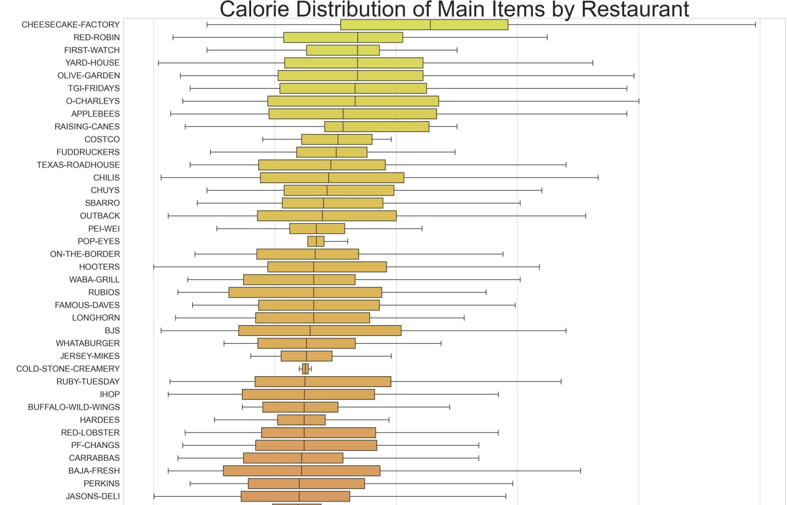
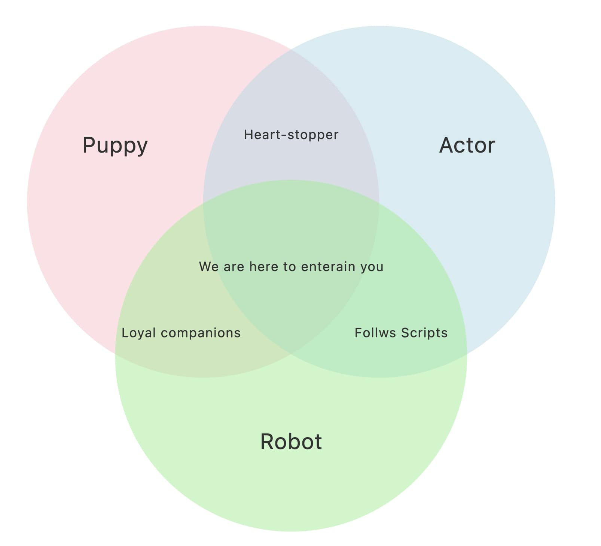

Growth Rate Imputations for Time Series Data

Streamlit application for imputing missing values in time-series data based on implied growth rates
Technologies: Python, Streamlit, Pandas
Fast Food Caloric Content

Distribution of caloric content of main items in several popular fast food chains.
Technologies: Python, OpenAI, Pandas
MTA Ridership 2017-2022

PowerBI visualization displaying interactive map of all MTA stations and relevant summary statistics of passenger ridership from 2017-2022
Technologies: Excel, PowerBI
NYC Taxi Demand 2018-2022

Dynamic map showing change in demand for Yellow Taxis in NYC across all NYC TLC zones from 2018-2022
Technologies: Python, Folium, MoviePy, Selenium
Store Locator Web Scraper

Web scraper that aggregates and standardizes store locator data using string matching techniques
Technologies: Python, BeautifulSoup, Fuzzywuzzy
Walmart Proximity Analysis

Explores the proximity of the US population to all Walmart locations, integrating geospatial and statistical analysis
Technologies: Python, Tableau, GeoPy, BeautifulSoup
Territory Realignment Tool

Streamlit-based web app tool to realign sales territories and export newly-created territories as an excel file
Technologies: Python, Streamlit, Pandas
Real-Time Economic Indicators

Streamlit-based analytics dashboard visualizing real-time economic indicators
Technologies: Python, Streamlit, Cron, Plotly
VennDiagramGPT

A fun, interactive Venn diagram generator powered by GPT-4!
Technologies: Python, Flask, GPT-4